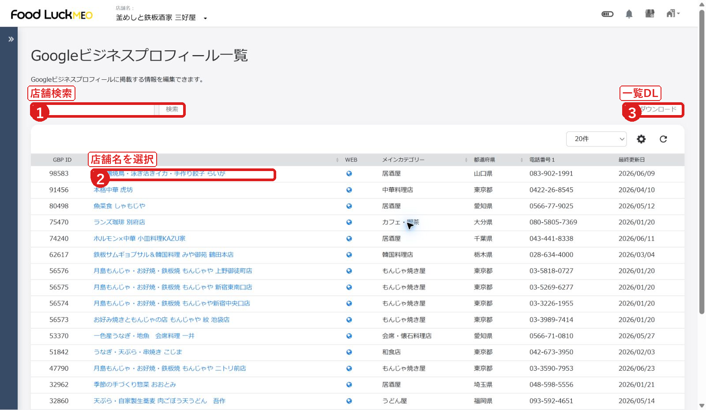
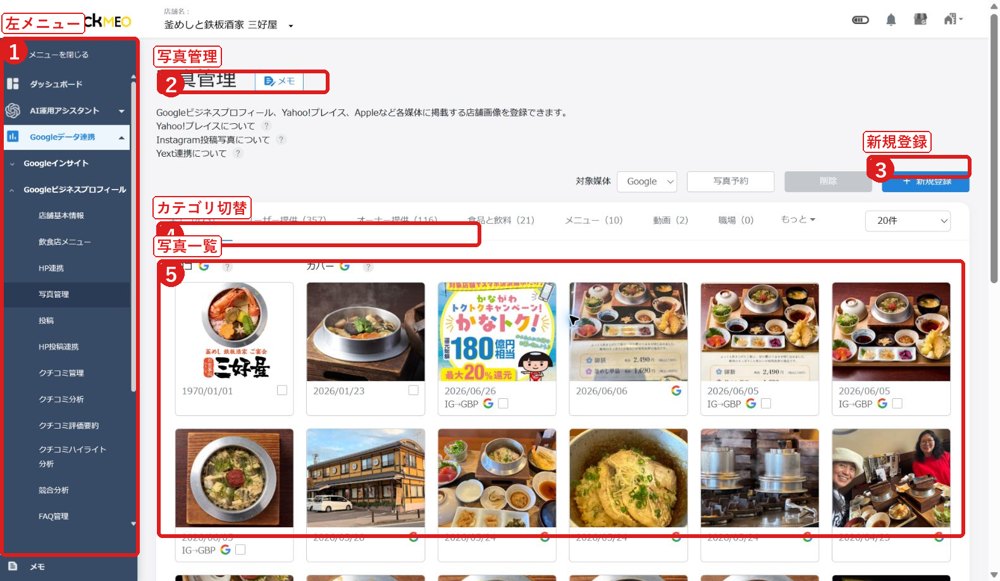

FoodLuck MEO 飲食店向け操作説明書
初版 | 飲食店オーナー・店舗担当者向け
| この説明書の使い方 日常的に使う「店舗情報・写真・投稿・クチコミ・数値確認」を前半にまとめました。初期設定や高度な機能は後半に置いています。画面の赤枠は、最初に見る場所や押す場所の目印です。 |
|---|
1. はじめに
FoodLuck MEOは、Googleビジネスプロフィールを中心に、店舗情報、写真、投稿、クチコミ、検索結果の数値をまとめて確認・管理するための画面です。
- お客様がGoogle検索やGoogleマップで見た時に表示される店舗情報を整えます。
- 写真や投稿を追加し、お店の今の魅力を伝えます。
- クチコミを確認し、未返信のものへ対応します。
- 閲覧数、電話、ルート、Webサイトクリックなどの反応を確認します。
| 注意 保存、投稿、削除、返信は外部に反映される可能性があります。迷った時は保存前にFoodLuckへ確認してください。 |
|---|
画面例 1: 店舗一覧から店舗を開く

- 1 店舗名やIDで検索できます。
- 2 青字の店舗名を押すと、店舗ごとの管理画面に入ります。
- 3 一覧データを確認したい時はダウンロードを使います。
2. 店舗ごとの管理画面の見方
店舗を開くと、左側にメニューが表示されます。日常的に使うのは、ダッシュボード、店舗基本情報、写真管理、投稿、クチコミ管理、インサイト情報、順位レポートです。
| メニュー | 見る目的 | おすすめ頻度 |
|---|---|---|
| 店舗基本情報 | 住所、電話、営業時間、説明文、属性を確認・修正する | 変更がある時 |
| 写真管理 | 料理、外観、店内、メニュー写真を追加・整理する | 月1回以上 |
| 投稿 | 新商品、季節メニュー、イベント、キャンペーンを投稿する | 週1回から月2回 |
| クチコミ管理 | 未返信クチコミを確認し、返信する | 週1回以上 |
| インサイト情報 | 検索やマップで見られた数、電話やルート数を見る | 月1回 |
| 順位レポート | 対策キーワードの順位推移を見る | 月1回 |
3. 店舗基本情報を整える
店舗基本情報は、お客様がGoogleで見た時の基本表示に関わる大切な画面です。店舗名、住所、電話番号、Webサイト、予約リンク、カテゴリー、営業時間、属性などを確認します。
- 左メニューから「店舗基本情報」を開きます。
- 店舗名、住所、電話番号、Webサイト、予約リンクを確認します。
- 営業時間と特別営業時間を確認します。祝日や臨時休業がある場合はここを見ます。
- カテゴリー、属性、サービスを確認します。
- 変更する場合は、反映先と内容を確認してから保存します。
| FoodLuck側で対応する項目 GBP連携、権限、改ざん防止、複数店舗の一括更新などは、FoodLuck側で確認・対応する項目です。店舗側で判断が難しい時は触らずに相談してください。 |
|---|
画面例 2: 店舗基本情報

- 1 左メニューから日常操作の画面へ移動します。
- 2 店舗基本情報の編集画面です。
- 3 NAP情報は、店舗名、住所、電話番号などの基本情報です。
- 4 営業時間や特別営業時間を確認します。
4. 写真・動画を管理する
写真は、来店前のお客様が雰囲気を判断する大きな材料です。料理写真、外観、店内、メニュー、スタッフ、季節のおすすめを定期的に追加しましょう。
- 左メニューから「写真管理」を開きます。
- 新しく追加する場合は「新規登録」を押します。
- 予約して追加したい場合は「写真予約」を使います。
- 写真を整理する時は、オーナー提供・ユーザー提供・カテゴリを切り替えて確認します。
- 削除は外部表示に影響するため、対象写真をよく確認してから行います。
- 料理写真は、明るく、おいしさが伝わるものを優先します。
- 外観写真は、初めて来るお客様が迷わないように入口が分かるものを入れます。
- 店内写真は、席の雰囲気、個室、カウンターなど来店前の不安を減らすものが有効です。
画面例 3: 写真管理

- 1 写真管理の画面を開きます。
- 2 新規登録から写真を追加します。
- 3 写真カテゴリで絞り込みます。
- 4 一覧から登録済み写真を確認します。
5. 投稿する
投稿は、今のお店の動きをGoogle上で伝える機能です。季節メニュー、宴会案内、キャンペーン、臨時のお知らせなどに使います。
投稿一覧の見方
- 「投稿済」は、すでに各媒体へ出ている投稿です。
- 「投稿待ち・予約中・エラー投稿・下書き」は、これから出る投稿や修正が必要な投稿です。
- エラーが出た投稿は、画像サイズ、文字数、掲載期間、媒体のルールを確認します。
画面例 4: 投稿一覧

- 1 投稿一覧画面です。
- 2 新規投稿を作成します。
- 3 投稿済みと予約中・下書きを切り替えます。
- 4 投稿履歴やステータスを確認します。
新規投稿の基本手順
- 「新規投稿」を押します。
- 最新情報、イベント、特典から投稿の種類を選びます。迷ったら最新情報を使います。
- 投稿する媒体を選びます。Google以外へ同時投稿する場合は、各SNS連携が必要です。
- タイトル、本文、画像を入力します。
- 即時投稿か予約投稿を選びます。
- 必要に応じてボタンURLやハッシュタグを設定します。
- 内容を確認して登録します。
| 投稿前の確認 投稿はお客様に見える内容です。誤字、日付、価格、画像、リンク先を確認してから登録してください。 |
|---|
画面例 5: 新規投稿

- 1 投稿の種類を選びます。
- 2 投稿する媒体を選びます。
- 3 タイトルや本文を入力します。
- 4 即時投稿、予約投稿、繰り返し設定を選びます。
6. クチコミを管理する
クチコミ返信は、お客様との接点であり、これから来店する人へのメッセージにもなります。未返信をためず、短くても丁寧に返すことが大切です。
- 左メニューから「クチコミ管理」を開きます。
- 「未返信」を押して、まだ返信していないクチコミを確認します。
- クチコミ本文を開き、内容に合わせて返信します。
- 返信パターンやAI返信は、文章のたたき台として使います。
- 低評価の場合は、事実確認をしてから落ち着いて返信します。
| 返信の基本姿勢 良いクチコミには感謝を伝え、低評価には謝罪と改善姿勢を伝えます。言い返しや長い説明は避け、未来のお客様が読んでも安心できる文章にします。 |
|---|
画面例 6: クチコミ管理

- 1 クチコミ管理画面です。
- 2 返信パターンや自動返信を設定できます。
- 3 未返信だけを絞り込めます。
- 4 一覧から個別のクチコミを開きます。
7. 数値を見る
インサイト情報では、お客様がどれくらいGoogle検索やGoogleマップでお店を見て、電話・ルート・Webサイトクリックなどの行動をしたかを確認できます。
- 全体閲覧ユーザー数: Google上でお店の情報を見た人数の目安です。
- 全体アクション数: 電話、ルート、Webサイトクリックなど行動の合計です。
- 全体アクション率: 見た人のうち、どれくらいが行動したかの目安です。
- Google検索とGoogleマップ: どこで見つけられているかを確認します。
- 左メニューから「インサイト情報」を開きます。
- 期間を1週間、1ヶ月、3ヶ月、カスタム期間から選びます。
- 全体閲覧ユーザー数、全体アクション数、全体アクション率を確認します。
- 電話、ルート、Webサイトクリックなど、来店につながる行動を見ます。
- 必要に応じて比較レポートをONにし、前年や前期間と比べます。
画面例 7: インサイト情報

- 1 インサイト情報の画面です。
- 2 期間と媒体を選びます。
- 3 主要な数字を確認します。
- 4 Google検索とGoogleマップの見られ方を確認します。
順位レポート
順位レポートでは、対策キーワードでお店がどの位置に表示されているかを確認します。日々の順位は上下するため、1日単位で一喜一憂せず、月単位で流れを見ることが大切です。
画面例 8: 順位チャート

- 1 順位チャート画面です。
- 2 キーワードや期間などの条件を確認します。
- 3 順位の推移を見ます。
8. クチコミを増やす
クチコミ促進機能では、アンケートやクチコミ依頼を使って、お客様に自然にクチコミ投稿をお願いできます。来店直後の満足度が高いタイミングで案内するのが効果的です。
- アンケート一覧: 作成済みアンケートを確認します。
- アンケート結果: 回答内容や反応を確認します。
- アンケート配布: URLやQRコードを配布する時に使います。
- クチコミ依頼: SMSやメールなどで依頼する場合に使います。
9. 追加機能
| 機能 | 使う場面 |
|---|---|
| 飲食店メニュー | メニュー情報を整え、検索時に料理内容を伝えたい時 |
| HP連携・HP投稿連携 | ホームページとMEO情報を連動させたい時 |
| FAQ管理・HP FAQ管理 | よくある質問を整えて、お客様の不安を減らしたい時 |
| クチコミ分析・評価要約 | クチコミから強みや改善点を見つけたい時 |
| 競合分析 | 近隣や同業態と比較したい時 |
| クーポン管理 | 来店促進の特典を運用したい時 |
| SNS連携・LINE公式・Instagram分析 | SNSやLINEもまとめて運用したい時 |
| 使う前に確認 追加機能は契約内容や連携状況によって表示・利用できる範囲が変わります。表示されない時はFoodLuckへ確認してください。 |
|---|
10. 初期設定・管理者向け
初期設定や管理者向けの項目は、店舗側で無理に操作せず、FoodLuckと確認しながら進めます。
- GBP連携、再連携、ステータス確認
- ユーザー追加、権限、ワークフロー
- グループ管理、店舗追加、GA4連携
- Yahoo!、Apple、食べログ、エキテン、Yext連携
| FoodLuck側で対応する項目 権限、連携、複数店舗一括設定、Yext、外部媒体連携などは、誤操作による影響が大きいため、FoodLuck側で確認します。 |
|---|
11. トラブル対応
| 困ったこと | まず見る場所 | 対応の考え方 |
|---|---|---|
| GBP連携が切れた | Googleデータ連携、店舗基本情報 | 再連携が必要な場合があります。FoodLuckへ連絡してください。 |
| 投稿が反映されない | 投稿一覧のステータス | エラー、予約中、媒体ルール、画像サイズを確認します。 |
| 写真を削除したい | 写真管理 | 削除対象をよく確認します。ユーザー投稿写真は削除申請になる場合があります。 |
| クチコミが見えない | クチコミ管理 | Google側の反映タイミングや非表示状態を確認します。 |
| 数字が想定と違う | インサイト情報、順位レポート | 反映タイミング、期間指定、Google仕様の違いを確認します。 |
12. MEO運用の考え方
MEOは、設定して終わりではありません。お店の魅力をGoogle上で正しく伝え続ける運用です。現場で忙しい中でも、月に一度だけは情報・写真・投稿・クチコミ・数字を確認する時間を作ることをおすすめします。
- 写真: 今の料理、季節感、店内の雰囲気を伝える。
- 投稿: お客様に来店理由を作る。
- クチコミ: お客様との信頼を積み重ねる。
- 店舗説明文・メニュー: 何が魅力のお店かをGoogleにもお客様にも伝える。
- 数値確認: なんとなくではなく、電話・ルート・Webクリックの変化を見る。
| 毎月の確認リスト 店舗基本情報に変更はないか、写真は増えているか、投稿は止まっていないか、未返信クチコミはないか、インサイトの電話・ルート・Webクリックはどう動いたか。この5つを見れば、運用の基本は押さえられます。 |
|---|